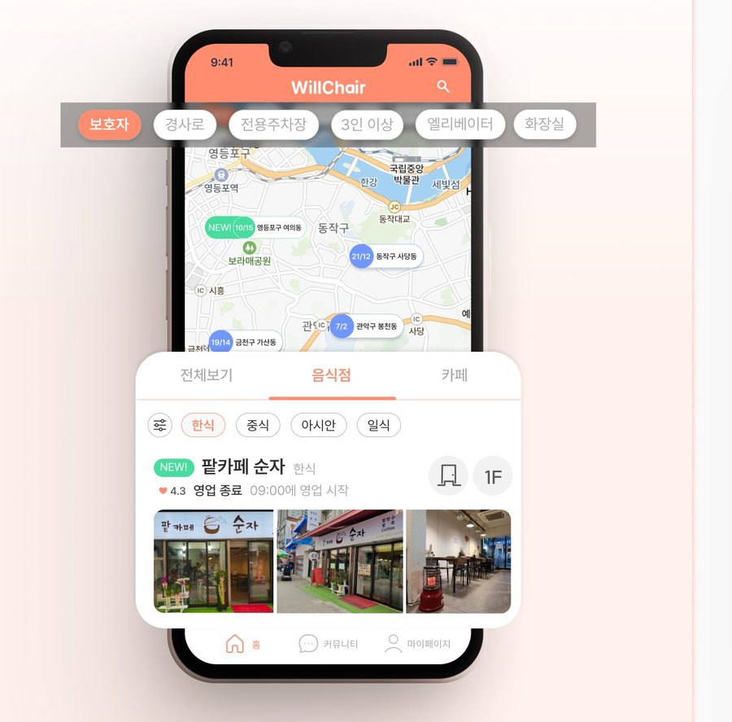
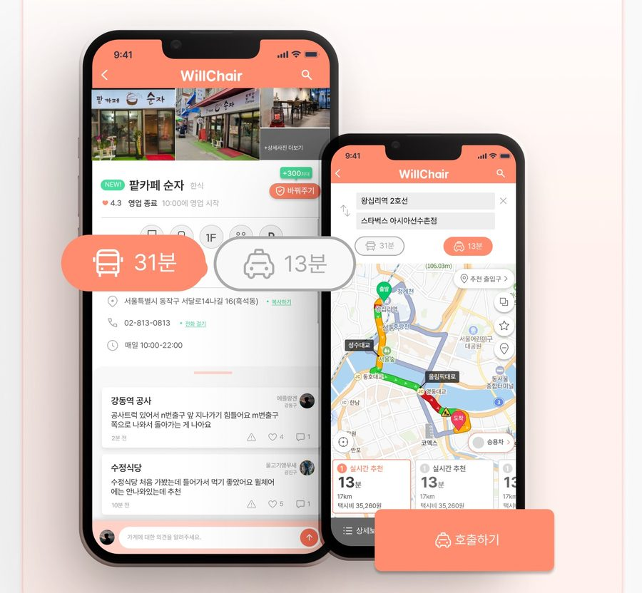
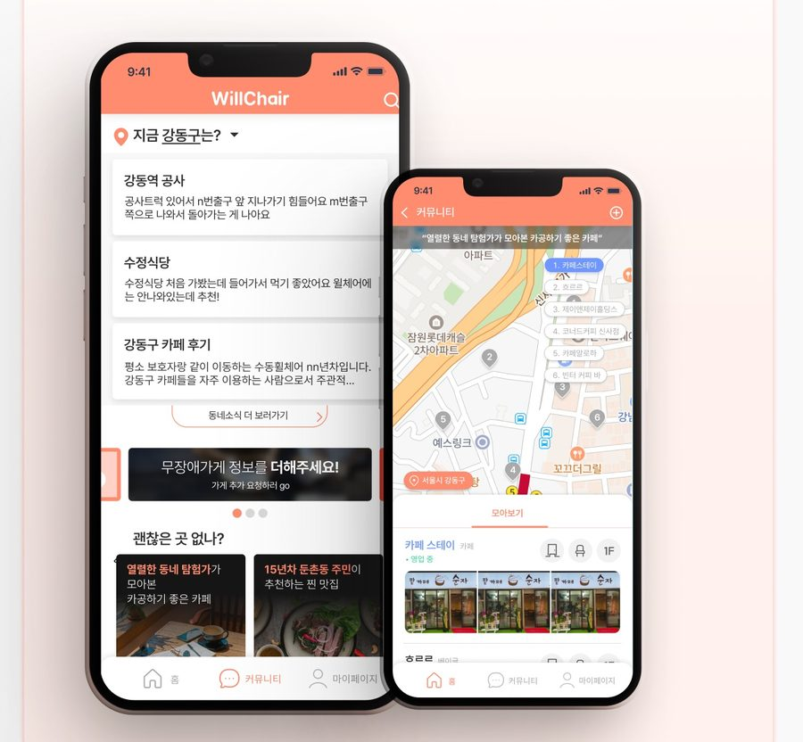
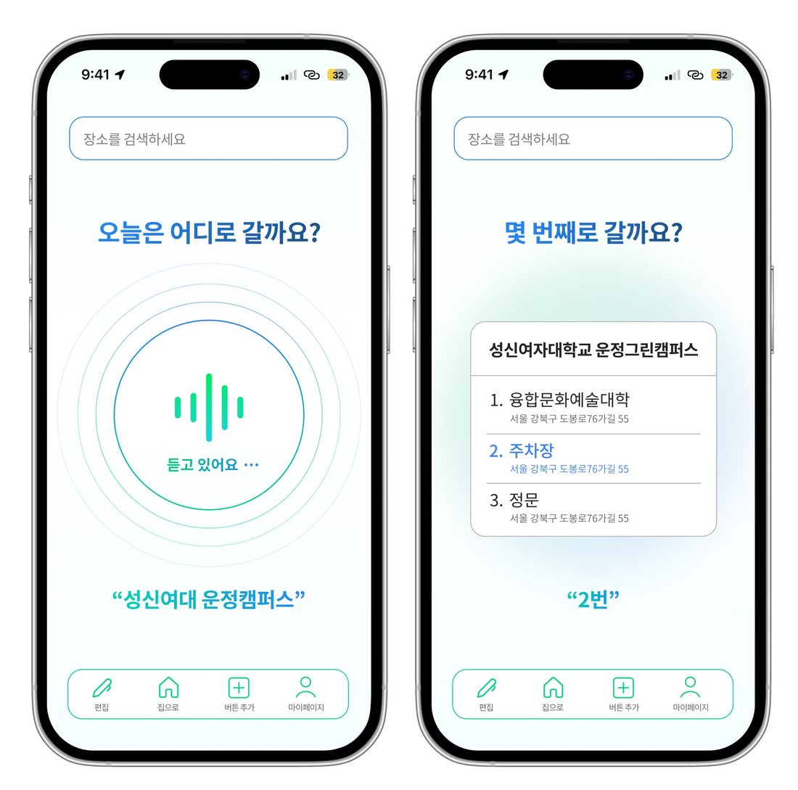
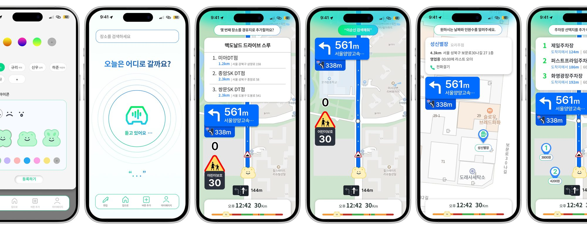

사람의 마음을 읽고,
경계를 넘어 설계합니다.
새로운 시작을 함께하고 싶은 서비스 디자이너, 송유나
직접 만나고, 직접 겪어보고, 직접 만듭니다.
휠체어에 앉아 도시를 건너고,
운전자 130명의 목소리를 모으고,
AI로 만든 동요를 궁궐에서 불렀습니다.
KAIST 주관 · 플랫폼 개발 부문 · 2024
국가유산청 주관 · 활동경진대회 · 2025
교통약자 베리어프리 지도 앱 WillChair · 커뮤니티 서비스 기획 & 비즈니스 모델 · 산학협력
데이터 너머의 마음을 읽기 위해 직접 움직였습니다. 포스터를 만들어 인터뷰이를 모집하고, 콜드메일로 인플루언서를 섭외하고, 휠체어에 앉아 하루를 이동해봤습니다.
지역 특화도와 소통 방향, 두 축으로 시장을 다시 그렸습니다.
기존 지도 서비스는 넓게 알지만 '현재 위치에서 바로 필요한 정보'에는 약했습니다.
지역 커뮤니티 서비스는 소통은 활발하지만 이동 접근성 정보가 없었습니다.
WillChair는 사용자의 자발적 참여로 채워지는 하이퍼로컬 접근성 지도로, 그 빈자리를 정확히 겨냥합니다.

장애 정도와 부위에 따라 필요한 정보는 다릅니다. 경사로 · 엘리베이터 · 전용주차장 · 화장실 등 맞춤형 필터로 '내가 갈 수 있는 곳'을 바로 보여줍니다.

목적지 정보와 이동 수단을 한 화면에. 대중교통 31분 vs 콜택시 13분을 비교하고 그 자리에서 바로 호출까지 이어집니다.

실시간 동네 소식과 큐레이션으로 앱에 머무를 이유를 만듭니다. 소통이 데이터가 되고, 데이터가 다시 서비스가 되는 락인 구조입니다.
이동 데이터를 기반으로 한 개인 대상 전동휠체어 관련 서비스.
개인별 정부 수혜 정보를 연계해 복잡한 구매 과정을 하나로 정리한 스토어.
지자체 콜택시 시스템 재정비로 시작해, 축적된 운영 노하우를 기업 서비스(B2B)로 확장.
네이버 내비게이션 리디자인 · 130여 명의 목소리로 다시 설계한 주행 경험 · HCI 실습
출발 전 — 주행 중 — 도착 2분 전. 실제 운전 시나리오를 3단계로 나누고 경로 선택부터 '맥도날드 DT 경유지 추가', 주차 정보 탐색까지 과업별 수행 시간을 측정해 디자인을 비교했습니다.
#안전성 #유익성 #편의성 #쉬운 사용
"오늘은 어디로 갈까요?", "몇 번째로 갈까요?" — 사용자가 명령어를 외울 필요 없는 제시형 안내어로 대화를 설계했습니다.
경유지 추가, 주차장 추천, 가게 검색까지 — 어떤 기능도 대화 3턴 안에 끝나도록 플로우를 압축했습니다.
기존 네이버 서비스와의 연동으로 검색-예약-이동이 하나의 흐름으로 이어집니다.
셀럽 음성과 캐릭터 아이콘 커스터마이징으로 안전한 기능에 애착을 더했습니다.

내비가 먼저 묻고, 운전자는 대답만 합니다. 목적지 선택("몇 번째로 갈까요?"), 경유지 추가, 검색까지 전 과정이 손을 쓰지 않는 대화로 이어지도록 화면과 안내어를 함께 설계했습니다.

개선된 프로토타입으로 다시 진행한 사용성 조사에서 이전 대비 96%의 만족도를 얻으며, '음성 중심 내비게이션'이라는 방향을 숫자로 검증했습니다. 시연 영상 보기 ↗
AI와 데이터를 도구 삼아 기획을 결과물로 — 수상과 특허로 이어간 프로젝트들
WillChair에서 확인한 이동약자의 문제의식을 하드웨어로 확장한 프로젝트. 리서치에서 출발한 아이디어를 지식재산으로 완성해, 성신여자대학교 산학협력단 명의로 출원하고 발명자로 등재되었습니다.
기존 돌봄 기술은 반쪽짜리였습니다. 애완형 로봇은 동물 흉내 수준이라 진짜 교감이 어렵고, 휠체어 같은 이동 보조기기는 몸만 옮길 뿐 마음을 돌보지 못합니다. 혼자 지내는 노년층에게 정서적 고립과 이동의 어려움은 동시에 오는 문제인데, 시장에는 둘을 함께 푸는 제품이 없었습니다.
그래서 로봇을 둘로 쪼갰습니다. 평소에는 감정을 읽고 대화하는 작은 AI 동반자(헤드)가 곁에 머물고, 외출할 때는 자율주행 바디와 합체해 의자이자 탈것이 됩니다. 분리된 헤드가 앞장서 길을 안내하고 바디가 뒤따르는 구조 — 돌봄과 이동이 하나의 흐름으로 이어지는 이 결합 방식 자체가 특허의 핵심 청구입니다.
비전 카메라로 표정과 행동을 읽어 감정 변화를 실시간 인식하고, 디스플레이로 감정을 표현하며 반응합니다. '흉내'가 아니라 읽고 답하는 교감으로 혼자 있는 시간을 채웁니다.
멈추면 의자, 달리면 탈것. 접이식 등받이가 펼쳐져 지면까지 닿고 발판이 나와 타고 내리는 과정 전체를 도와줍니다 — 보호자 없이도 외출이 가능해집니다.
팔걸이 아래 카메라가 바닥 장애물을 미리 읽고, 초음파 센서와 IMU가 거리와 자세를 지킵니다. 부드러운 소프트 로보틱스 외형까지 — 몸을 맡겨도 되는 기계라는 신뢰를 설계했습니다.